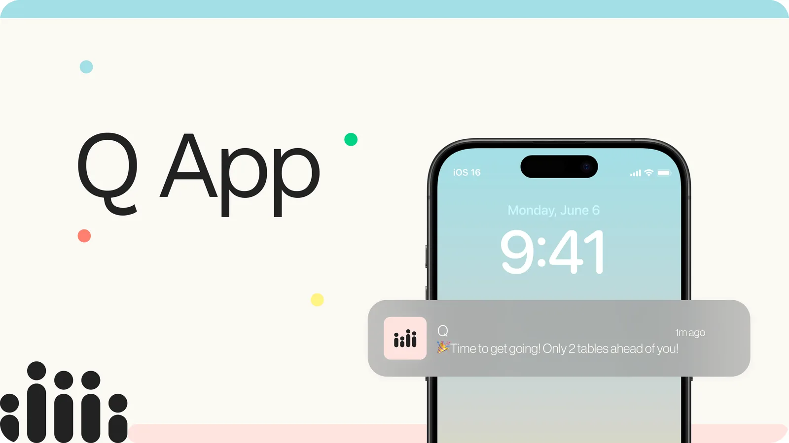
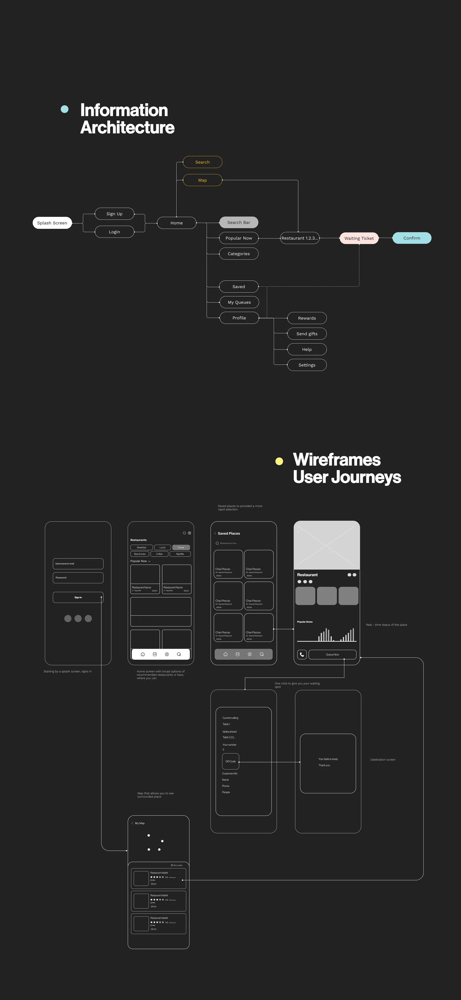
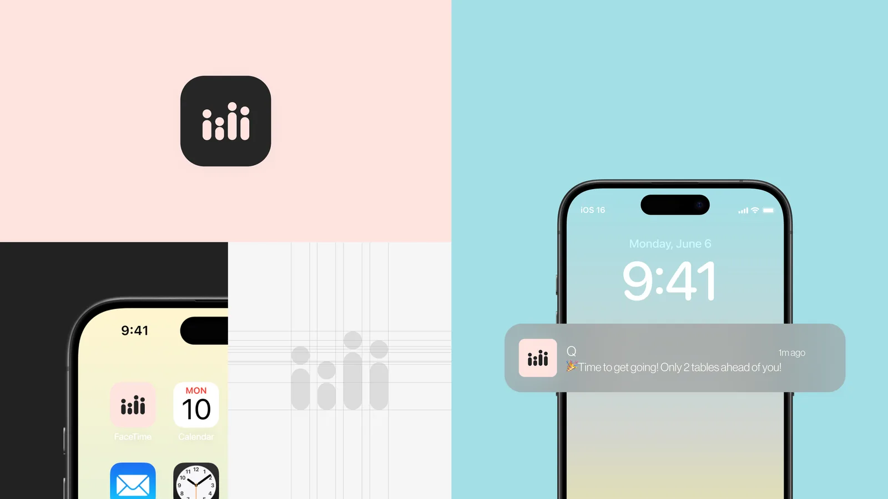
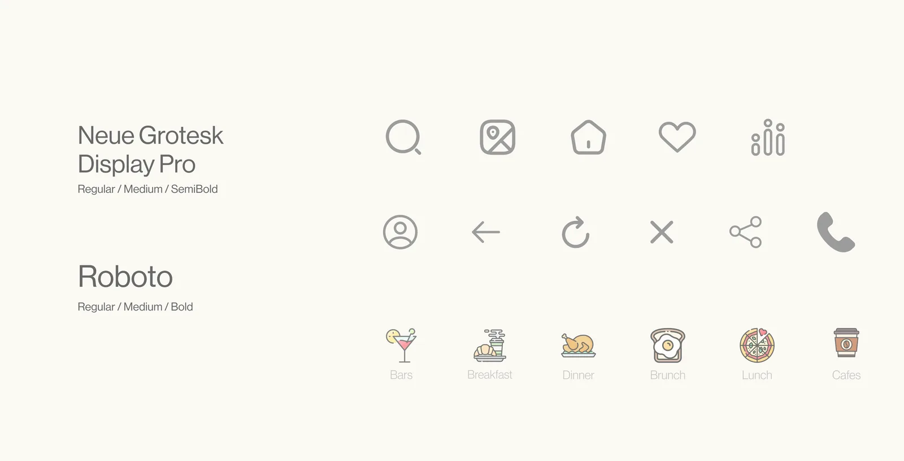
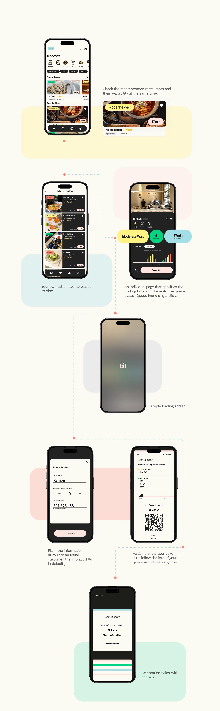

Mobile App · 2025
Q App
A digital queuing platform that removes the frustration of waiting in line — offering real-time availability, personalized recommendations, and virtual queue management for bars, cafes, and restaurants.

Overview
Q is a platform that provides digital queuing for bars, cafes and restaurants. It enhances the customers' experience of lining up for any busy business by providing real-time status of the venue and personalized recommendations of different places to choose from.
The project addresses a growing urban challenge — the friction of physical queuing in cities with high tourism and foot traffic — and transforms it into a seamless, mobile-first experience that benefits both customers and businesses.
The Problem
Queuing for a restaurant or bar has become a common phenomenon in Barcelona due to its high traffic of tourism and population. For customers, physical queuing can be a source of frustration, as it often entails long wait times in crowded and sometimes uncomfortable spaces.
Navigating through congested streets and sidewalks to physically queue outside a restaurant or business can detract from the overall experience — turning what should be an enjoyable outing into an exercise in patience.


Research & Discovery
User research focused on identifying the pain points customers experience when queuing in busy areas. Through insights and behavioral observation, we mapped out the friction points across the full journey — from deciding where to eat, to arriving at the venue, to waiting and being seated.
"If marketers don't know exactly which customers to target or what fuels their buying decisions, growth will always feel painfully slow. The solution? Customer research." — Katelyn Bourgoin


Design Process
The design process centered around four core functionalities derived directly from user research:
Real-Time Availability & Recommendations — The app provides users with live information on restaurant and bar availability, leveraging AI and user preferences to offer personalized alternatives.
Virtual Queue Management — Users can join virtual queues for their preferred venues, eliminating the need to physically wait in line, with real-time notifications about estimated wait times.
Map with Real-Time Queue Status — A map view shows nearby restaurants and bars with live queue status, helping users make quick decisions about where to dine.
Revisitation for Businesses — By providing efficient queuing solutions, the app not only enhances the first-time visit but encourages repeat business and loyalty.

Architecture & Style
The information architecture was designed to minimize the number of steps between opening the app and joining a queue. The visual identity draws from a minimal, high-contrast aesthetic — reflecting the fast-paced, urban environment the app lives in.




UI Design
The final UI brings together the research insights, information architecture, and visual language into a cohesive mobile experience — clean, fast, and intuitive for users navigating Barcelona's dining scene in real time.

Final Mockups
High-fidelity mockups showcasing the app in real-world context and user flows.